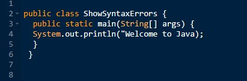
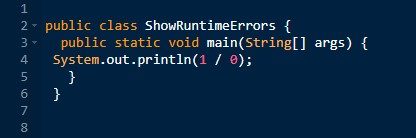
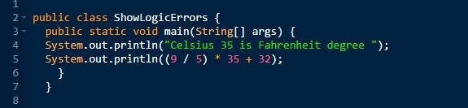
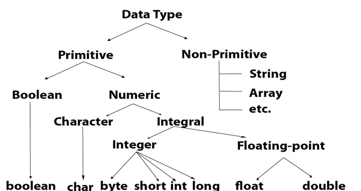
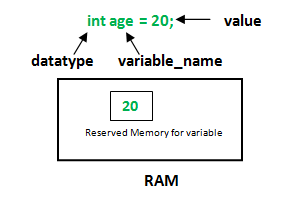

<!DOCTYPE html>
<html>
    <head>
        <title>The Logic of Java </title> 
        <style> 
        body{
            margin: 50px 50px;
            font-size: 20px;
            background-color:rgb(126, 164, 179);
        }
        h1{
            color: rgb(7, 72, 102); 
            font-size: 50px;
        }
        h2{
            color:rgb(6, 82, 117);
            font-size: 40px;
        }
        #Vari{ word-wrap: normal;
        }
        #Variables{ word-wrap: none;
        }
        p{border: solid 4px;
        border-color:  rgb(38, 115, 141); background-color: aliceblue;}
        
        </style>
        <script src="javapart2.js"></script>
        
    </head>
 </html>
<body>
<h1 >Programming Errors</h1>
<p>Programming errors can be categorized into three types: syntax errors, runtime
    errors, and logic errors.</p>
<article>
<h2>Syntax Errors</h2>
<p>Errors that are detected by the compiler are called syntax errors or compile errors. Syntax
    errors result from errors in code construction, such as mistyping a keyword, omitting some
    necessary punctuation, or using an opening brace without a corresponding closing brace.
    These errors are usually easy to detect because the compiler tells you where they are and
    what caused them.</p></article>
    
    <ul style="border: solid 4px; border-color:  rgb(38, 115, 141);  background-color: aliceblue;width:600px;margin-left:600px;
    margin-top:-150px;margin-bottom: 20px;">
        <li>The keyword <mark style="background-color: lightblue;">"void"</mark> is missing before main in line 2.</li>
        <li>The string Welcome to Java should be closed with <u>a closing quotation mark</u> in line 3</li>
    </ul>

    <article>
    <h2 style="margin-top: 100px;">Runtime Errors</h2>
    <p >Runtime errors are errors that cause a program to terminate abnormally. They occur while
        a program is running if the environment detects an operation that is impossible to carry out.
        Input mistakes typically cause runtime errors.</p> <p style="width: 650px;"> An input error occurs when the program is
        waiting for the user to enter a value, but the user enters a value that the program cannot handle.
        For instance, if the program expects to read in a number, but instead the user enters a string,
        this causes data-type errors to occur in the program.
        Another example of runtime errors is division by zero. This happens when the divisor is
        zero for integer divisions.</p></article>
    

    <article>
    <h2> Logic Errors</h2>
    <p >Logic errors occur when a program does not perform the way it was intended to. Errors of
        this kind occur for many different reasons.</p></article>
    

    <p style="width: 750px;margin-left: 690px;margin-top:-170px;">In general, syntax errors are easy to find and easy to correct because the compiler gives
        indications as to where the errors came from and why they are wrong. Runtime errors are not
        difficult to find, either, since the reasons and locations for the errors are displayed on the console
        when the program aborts. Finding logic errors, on the other hand, can be very challenging. In the
        upcoming pages, you will learn the techniques of tracing programs and finding logic errors.</p>
    <h2>Common Errors</h2>
    <ul style="border: solid 4px; border-color:  rgb(38, 115, 141);  background-color: aliceblue;width:550px;
    ">
        <li>Missing Braces</li>
        <li>Missing Semicolons</li>
        <li>Missing Quotation Marks</li>
        <li>Misspelling Names</li>   
    </ul>
    <video width="500px" height="240px" style="margin-top:-190px ;margin-left:820px;" controls>
        <source src="Java5.mp4" type="video/mp4">
        </video>

    <h1 style="margin-top:-60px;">Data Types</h1>
    <p>Programs manipulate information and information comes in many forms.Java is a type-safe language, which means
        that it requires you to be explicit about the type of information that you are manipulating i.e specify whether it
        is a number or a text or something else. This is due to the fact that the same information can be represented differently
        ,and treated differently in the computer."1" and 1.
    </p>
    
    <p>In Java this is not the same thing. While the first one is a string, the second one is a number. At this point, this might
     not make much difference, but soon enough you will be familiar with the different rules that apply to each. One thing that is 
     certainly different here is the internal representation in the computer memory.Do not forget that computers only understand
     binary(0s and 1s) and the data they store in memory or other storage mechanisims is stored in binary as well. As the first step
     the string "1" is not represented the same way as simply the number 1. Additionally, you can not do certain operations with strings
     that you can do with numbers, such as addition, multiplication etc.
    </p>

    <p>Variables are nothing but reserved memory locations to store values. This means that when you create a variable 
       you reserve some space in the memory.Based on the data type of a variable, the operating system allocates
       memory and decides what can be stored in the reserved memory. Therefore, by assigning different data types
       to variables, you can store integers, decimals, or characters in these variables.</p>
    <p>There are two data types available in Java:</p>
    <ul style="border: solid 4px;
    border-color:  rgb(38, 115, 141); background-color: aliceblue;width:550px;
    "> <li>Primitive Data Types (boolean, char, byte, short, int, long, float and double)</li> <li>Reference/Object Data Types(classes, interfaces, and arrays)</li></ul>
    


    <video width="610" height="410" style="margin-top:10px ;margin-left:180px;" controls>
        <source src="Java4.mp4" type="video/mp4">
        </video>
    <h1 >Variables</h1>
    <p id="variab" style="height: 50px;">A variable is a container which holds the value while the Java program is executed. A variable is assigned with 
        a data type.Variable is a name of memory location. There are three types of variables in java: local, instance and static.<button onclick="varia()" style="bottom: 5px;border: solid 2px;
        border-color:  rgb(38, 115, 141); 
          border-radius:10px;
          background-color:aliceblue;height: 25px;top:-3px;">Find words that contain "variable"</button></p>
    <script>
            function varia() {
              var word = "A variable is a container which holds the value while the Java program is executed. A variable is assigned with a data type.Variable is a name of memory location. There are three types of variables in java: local, instance and static."; 
              var result= word.match(/variable/g);
              document.getElementById("variab").innerHTML = result;
              
            }
     </script>
    <p>Variable is name of reserved area allocated in memory. In other words, it is a name of memory location. It is a combination of 
        <b>"vary + able"</b> that means its value can be changed.</p>
  
    <canvas id="Vari" width="150" height="200" style="border:2px solid #000000"></canvas>
    
        <script>
        var c = document.getElementById("Vari");
        var ctx = c.getContext("2d");
        var grd = ctx.createLinearGradient(0, 0, 200, 0);
        grd.addColorStop(0, "transparent");
        grd.addColorStop(1, "green");
        ctx.fillStyle = grd;
        ctx.fillRect(0, 0, 150, 200);

        // Drejtkendeshi 
        ctx.beginPath();
        ctx.lineWidth = "3";
        ctx.strokeStyle = "blue";
        ctx.rect(80, 80, 50, 50);
        ctx.font = "30px Arial";
        ctx.fillStyle="black";
        ctx.fillText("10", 85, 115);  
        ctx.stroke();
        </script> 

<canvas id="Variables" style="margin-right:20px;"></canvas>
    <script>function draw_arrow(context, startX, startY, size) {
        var arrowX = startX + 0.75 * size;
        var arrowTopY = startY - 0.707 * (0.25 * size);
        var arrowBottomY = startY + 0.707 * (0.25 * size);
        context.moveTo(startX, startY);
        context.lineTo(startX + size, startX);
        context.lineTo(arrowX, arrowTopY);
        context.moveTo(startX + size, startX);
        context.lineTo(arrowX, arrowBottomY);
        context.stroke();
      }
      window.onload = function() {
        var canvas = document.getElementById("Variables");
        var context = canvas.getContext("2d");
        var startX = 50;
        var startY = 50;
        var size = 100;
        context.lineWidth = 2;
        draw_arrow(context, startX, startY, size);
      }</script>
<!--<figcaption style="margin-left: 50px;">RAM</figcaption>-->
      <p style="margin-left: 350px;margin-top:-120px; width: 150px;height:30px;border:solid; border-color:  rgb(38, 115, 141);  background-color: aliceblue; text-align: center;">Reserved Area</p>
  
<button style="margin-top: 100px;margin-left: 50px;width: 60px;height:30px;" onclick="myram()">RAM</button>
<h id="Ram" style="width: 200px; border-color:  rgb(38, 115, 141);  background-color: aliceblue;"></h>



</body>
<p id="data" style=" border: none; background-color:rgb(126, 164, 179)"></p>
           <script>
            var d = new Date();
            document.getElementById("data").innerHTML=d;
        </script>
</html>
